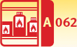
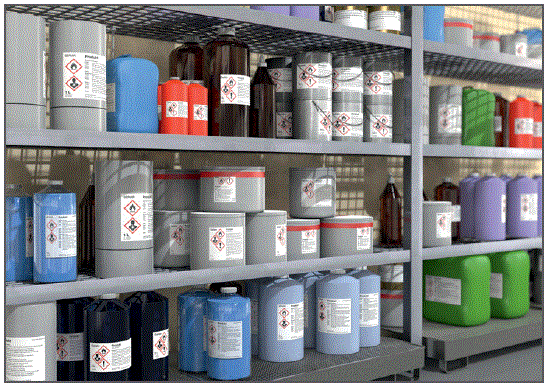
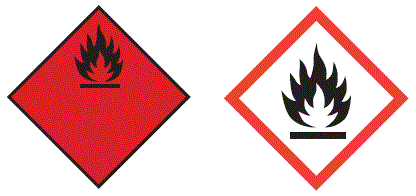
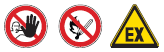

Lagerräume für brennbare Flüssigkeiten
|
 |

Gefährdungen
- Es kann zu Bränden und Explosionen kommen.
Schutzmaßnahmen
- Entzündbare Flüssigkeiten erkennt man wahlweise an folgenden Kennzeichen:

- Brennbare Flüssigkeiten werden wie folgt klassifiziert:
- extrem entzündbar: Flüssigkeiten mit einem Flammpunkt kleiner als 23 °C und einem Siedepunkt von höchstens 35 °C,
- leicht entzündbar: Flüssigkeiten mit einem Flammpunkt kleiner als 23 °C,
- entzündbar: Flüssigkeiten mit einem Flammpunkt zwischen 23 °C und 60 °C.
- Der Flammpunkt einer brennbaren Flüssigkeit ist die niedrigste Temperatur, bei der sich in einem geschlossenen Tiegel aus der zu prüfenden Flüssigkeit unter festgelegten Bedingungen Dämpfe in solcher Menge entwickeln, dass sich im Tiegel ein durch Fremdentzündung entflammbares Dampf-Luft-Gemisch bildet.
Unzulässige Lagerung
Die Lagerung brennbarer Flüssigkeiten ist unzulässig:
- in Durchgängen und Durchfahrten,
- in Treppenräumen,
- in allgemein zugänglichen Fluren,
- auf Dächern von Wohnhäusern, Krankenhäusern, Bürohäusern und ähnlichen Gebäuden sowie in deren Dachräumen,
- in Arbeitsräumen,
- in Gast- und Schankräumen.
Lagerungsbedingungen
Bis zu 20 l entzündbarer (davon bis 10 l extrem entzündbarer) Flüssigkeit dürfen außerhalb von Lagern aufbewahrt werden. Werden darüber hinausgehende Mengen gelagert, müssen folgende Bedingungen eingehalten werden:
- Gefahrstoffe dürfen nur in den Orginalgebinden aufbewahrt werden. Die Gebinde müssen verschlossen sein.
- Gefahrstoffe sind so aufzubewahren, dass freiwerdende Stoffe leicht erkannt und beseitigt werden können. Freigesetzte Stoffe müssen umgehend beseitigt werden. Die dafür notwendige Schutzausrüstung muss schnell erreichbar aufbewahrt werden.
- Das Lager sollte über einen hinreichend widerstandfähigen Boden verfügen. Behälter mit flüssigen Gefahrstoffen müssen in Auffangbehälter gestellt werden. Die Auffangwannen müssen 10 % des Inhalts der Gefäße, mindestens aber den Inhalt des größten Gefäßes auffangen können. Werden entzündbare Flüssigkeiten aufbewahrt, sind die Auffangwannen zu erden. Stoffe, die miteinander reagieren, dürfen nicht über demselben Auffangbehälter gestellt werden. Die Auffangbehälter sind regelmäßig auf ausgelaufene Stoffe zu prüfen und diese sind zu beseitigen.
- Elektrische Geräte und Installationen müssen EX-geschützt sein. Zündquellen müssen vermieden werden.
- Das Lager muss gut beleuchtbar sein.
- Das Lager muss belüftet werden. Eine natürliche Lüftung ist ausreichend, wenn unmittelbar ins Freie führende Lüftungsöffnungen mit einem Gesamtquerschnitt von mindestens 1/100 der Bodenfläche des Lagerraumes, mindestens aber zwei Lüftungsöffnungen jeweils in Boden- und Deckenhöhe von je mindestens 100 cm2, vorhanden sind. Diese dürfen nicht abgedeckt oder zugeklebt sein. Die Öffnungen sind regelmäßig zu kontrollieren.
- Im Lager dürfen keine Lebensmittel aufbewahrt werden. Das Essen, Trinken und Rauchen ist verboten.
- Das Lager muss mit Feuerlöscheinrichtungen ausgerüstet werden.
- Zugang zum Lager dürfen nur dazu befugte Personen haben. Diese sind anhand einer Betriebsanweisung zu unterweisen.
- Die Lagertür ist mit den Warnhinweisen „Zutritt verboten“, „Keine offene Flamme“ und „Warnung vor explosiosfähiger Atmosphäre“ zu kennzeichnen:

- Es ist ein Alarmplan und ein Lagerverzeichnis zuerstellen. Soll das Lager mehr als 6 Monate betrieben werden, ist eine Anzeige des Lagers erforderlich. Weitere Maßnahmen hängen von der Gefährdungsstufe des Lagers ab. Diese ergibt sich aus der Wassergefährdungsklasse der eingelagerten Produkte und deren Menge.
| Gefährdungsstufen von Lagern |
| Ermittlung der Gefährdungsstufen |
Wassergefährdungsklasse |
| Volumen in m³ oder Masse in t |
1 |
2 |
3 |
| ≤ 0,22 oder 0,2 | Stufe A |
Stufe A |
Stufe A |
| > 0,22 oder 0,2 < 1 |
Stufe A |
Stufe A | Stufe B |
| > 1 ≤ 10 |
Stufe A |
Stufe B | Stufe C |
| > 10 ≤ 100 | Stufe B | Stufe C | Stufe D |
| > 100 ≤ 1000 | Stufe B | Stufe D | Stufe D |
| > 1000 | Stufe C | Stufe D | Stufe D |
Oberirdische Lager der Gefährdungsstufe B, C oder D unterliegen einer Eignungsfeststellung.
Lager der Gefährdungsstufe C oder D dürfen nur von anerkannten Fachbetrieben errichtet werden.
Lager der Gefährdungsstufe B, C und D müssen regelmäßig durch einen Sachverständigen geprüft werden.
Für unterirdische Lager und Lager in Wasserschutzgebieten gelten strengere Regelungen (S. AwSV).
07/2021